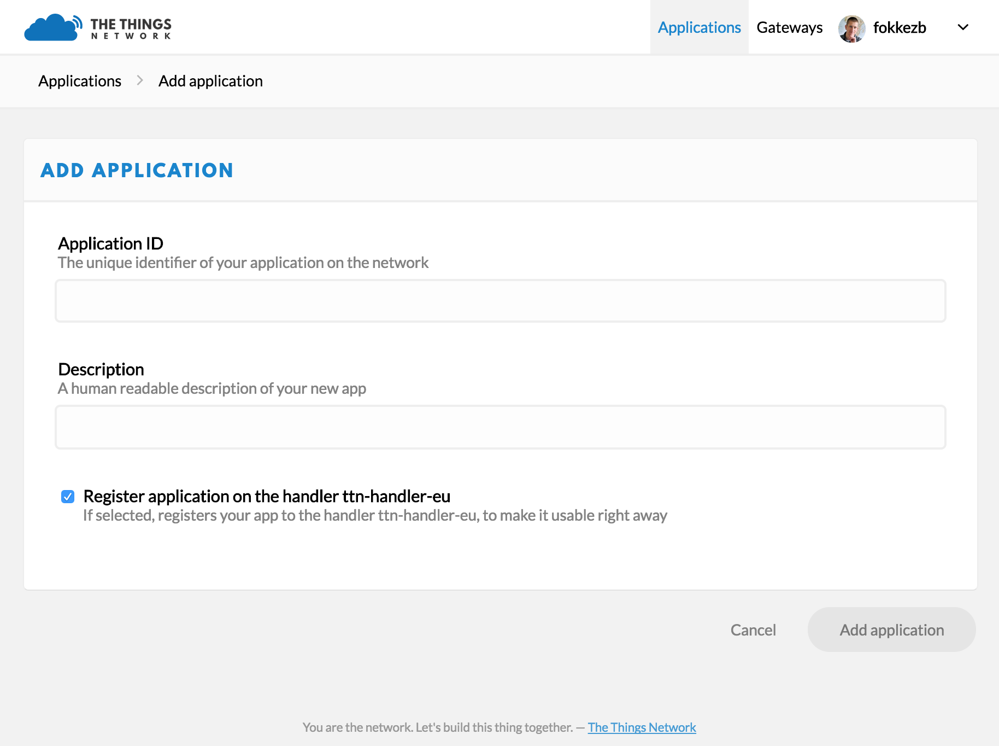
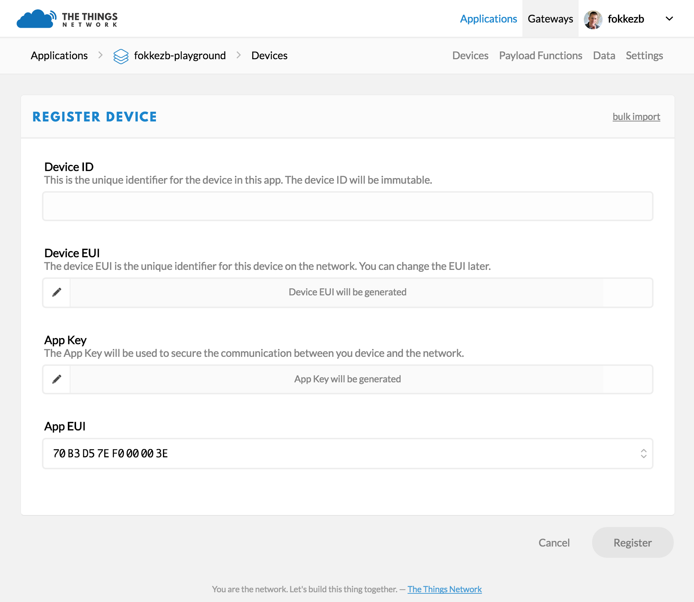

Quick Start
Outdated: this section documents The Things Network V2, which is no longer maintained. See the documentation for The Things Stack V3, or browse the V2 docs index.
This guide will walk you through programming your The Things Node with your first sketch to send its measurements over The Things Network.
Setup Arduino IDE #
- Follow Arduino / IDE Setup & Usage to setup the IDE.
- Download the
TheThingsNetworkandTheThingsNodelibraries via Sketch > Include Library v Manage Libraries…. Search forTheThingsin the search bar. Install the latest versions of bothTheThingsNetworkandTheThingsNode. - Follow SparkFun’s Installation Instructions to add the additional board manager and install the SparkFun AVR Boards.
Connect your Device #
-
Open the case using a Phillips (cross) screw driver.
You do not need to insert batteries while we program it, since the Node will be powered via USB. Using both batteries and USB at the same time is also ok, as the device will then switch to using USB.
-
Connect a micro-USB cable to the connector found between the battery compartment and the top side of the case.
Some Micro-USB cables might not fit the limited space between the battery compartment and the casing. Also make sure you use a cable that supports data, not just power. The one we ship with The Things Uno should work.
-
Connect the USB cable to your computer.
-
In the Arduino IDE, select Tools > Boards > SparkFun Pro Micro.
-
Select Tools > Processor > ATmega32U4 (3.3V, 8Mhz).
-
Select the Node’s Serial Port under Tools > Port.
Unlike The Things Uno, which the Arduino IDE recognizes as Arduino Leonardo, it does not always recognize the Node as SparkFun Pro Micro. You will have to see what
/dev/*usb*(Mac/Linux) orCOM(Windows) option appears in the menu after connecting the Node.Another common issue is that on recent Macs the Node may not appear at all. We suggest to connect via a USB hub.
Get your Device EUI #
To communicate via The Things Network, you need to register your device. For this, we’ll need its unique Device EUI. This is a unique address, hard coded into the LoRa module.
-
In the Arduino IDE, select File > Examples > TheThingsNetwork > DeviceInfo.
Replace
REPLACE_MEwith eitherTTN_FP_EU868orTTN_FP_US915depending on the frequency plan of your device. -
Select Sketch > Upload to upload the sketch.
Uploads may fail if the Serial Monitor is open or if the IDE lost track of the port you selected. Close the serial monitor, check the port selection and try again. If it still fails, check Arduino Troubleshooting, or the troubleshooting page.
-
Within 10 seconds, select Tools > Serial Monitor to open the Serial Monitor.
Soon, it should print a list of information:
-- STATUS EUI: 0004A30B001B7AD2 Battery: 3223 AppEUI: 70B3D57EF000001C DevEUI: 0004A30B001B7AD2 Band: 868 Data Rate: 5 RX Delay 1: 1000 RX Delay 2: 2000 Total airtime: 0.00 sUse the first
EUIvalue to register your device.
🎉 You have connected your device, written your first sketch, uploaded it to your device and monitored your device logs to retrieve its Device EUI.
Create an Account #
To register your device you’ll need a The Things Network account.
-
Go to account.thethingsnetwork.org and click create an account.
You will receive an email to confirm your email address. You have 24 hours to do so, so let’s wait for the mail and carry on! 🚀
You can change all but your username later via your Profile.
-
Select Console from the top menu.
-
From the top right menu, select your name and then Settings. Then change the default Handler if the one currently selected is not where you’ll be deploying most of your devices.
Add an Application #
Devices need to be registered with an application to communicate with. Let’s add one.
- On console.thethingsnetwork.org, click add application.
- For Application ID, choose a unique ID of lower case, alphanumeric characters and nonconsecutive
-and_. - For Description, enter anything you like.
- Leave the Handler registration on the default selected value, unless you are going to use this application in a different region than your default region.

-
Click Add application to finish.
You will be redirected to the newly added application.
Register your Device #
You are now ready to register your device to the application.
-
On the application’s page, scroll down to Devices or select Devices from the top right menu.
-
In the Devices box, click register device.
- For Device ID, choose an ID of lower case, alphanumeric characters and nonconsecutive
-and_. A device ID needs to be unique per application, but can be reused in another application. - For Device EUI, copy-paste the DevEUI you retrieved from your device.
- Leave the App Key on “this field will be generated”.
- Leave the default App EUI selected.

- For Device ID, choose an ID of lower case, alphanumeric characters and nonconsecutive
-
Click Register to finish.
You will be redirected to the newly registered device, where you can find the generated Example Code which we’ll need next.
The Things Node example #
The The Things Network Arduino Library comes with a class dedicated to The Things Node. It wraps the commands to work with the various sensors in simple APIs.
The library also comes with an example demonstrating most of these APIs. Let’s get started by uploading the basic example.
-
Still in the console, scroll down the device’s screen to Example Code and copy the keys:

-
In the Arduino IDE, select File > Examples > TheThingsNode > Basic.
- Replace the lines following the comment Set your AppEUI and AppKey with the keys you copied from the Console.
- Replace
REPLACE_MEwith the appropriate frequency plan for your device (listed in the comments in the line above it).
-
Select Sketch > Upload to upload the sketch.
-
Within 10 seconds, select Tools > Serial Monitor to open the Serial Monitor.
Shortly after this you will see the current temperature and values from the other sensors on the Things Node.
Let’s run through the Sketch together to understand what it does.
Setup #
In setup(), after the part where we initialize TheThingsNetwork class to communicate with The Things Network, we get the singleton of TheThingsNode class. Here, we can configure the sensors and register callback functions that should be run when a sensor is triggered.
Loop #
The only code you should have in loop() is a call to node->loop().
TheThingsNode will optimize the battery efficiency of the device by putting it into sleep. It will wake up every 8 seconds or when a sensor triggers it. In both scenarios, the loop() function will run. What node->loop() will do is figure out why it woke up and call the relevant handler registered in setup().
Interval #
Any code you want to run regularly should be put in a function registered using node->onInterval(). You can use node->configInterval(bool enabled, uint32_t ms) to set an interval in milliseconds when ttn->loop() should call this function.
Since the device only wakes up every 8 seconds or when a sensor triggers it, it makes no sense to set the interval to less than 8000ms.
Callbacks #
In the callbacks you can use the API’s getters and setters to read sensors, change the LED’s color, reconfigure or temporarily disable sensors etc. And of course you can use TheThingsNetwork class to send the sensor data over The Things Network.
Send Data #
As you can see, the example sends all sensor data from the interval() callback, which is configured to run every 20 seconds. In addition, it will send the temperature when it exceeds the configured limits as well as the duration of any detected motion or the press of a button.
Monitor & Decode Messages #
Let’s see the messages come in.
-
Since we are in the device overview, we need to return to the application’s screen in the console. On the top left breadcrumb, click on your application name. Select Data from the top right menu.
You should now see the messages come in. If you don’t see anything you likely do not have network coverage at your location.
What you see on the data page is the raw payload in hex-formatted, space-separated bytes. Let’s decode that to meaningful fields.
-
Select Payload Formats from the top right menu.
-
Select custom under Payload Format. Then make sure decoder is selected on the next line. Now copy-paste the following JavaScript code into the text field, replacing all exiting text inside it.
function Decoder(bytes, port) { var decoded = {}; var events = { 1: 'setup', 2: 'interval', 3: 'motion', 4: 'button' }; decoded.event = events[port]; decoded.battery = (bytes[0] << 8) + bytes[1]; decoded.light = (bytes[2] << 8) + bytes[3]; decoded.temperature = ((bytes[4] << 8) + bytes[5]) / 100; return decoded; } -
Use the input field and Test button to see how various payloads of hex-formatted, space-separated bytes are decoded.
For example,
01 12 8E 00 21 09 5A 03 04will become:{ "battery": 4750, "event": "interval", "isButtonPressed": false, "isMoving": false, "isUSBConnected": true, "light": 33, "temperature": 23.94 } -
Click Save Payload Functions to save.
-
Select Data from the top right menu.
-
New messages should now show their decoded payload.
🎉 You are now decoding cryptic byte messages to meaningful payloads!
Would you like to learn how to receive and further process these messages? Head over to the MQTT guide!